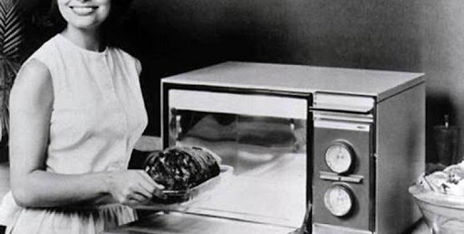
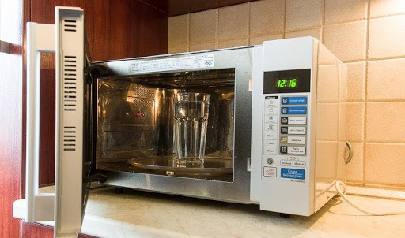

КОНСТРУКЦІЯ ТА ПРИНЦИП РОБОТИ МІКРОХВИЛЬОВКИ
Життя сучасної людини настільки швидке, що у багатьох просто не вистачає часу на приготування їжі. У цій ситуації на допомогу приходить сучасна побутова техніка, наприклад, мікрохвильовки. У них можна не тільки швидко розігріти їжу, але й швидко приготувати напівфабрикати. Поговоримо про те, як влаштовані та працюють НВЧ печі й, побіжно деконструюємо міф про "шкідливе" випромінювання, яке лякає багатьох.
Історія винаходу НВЧ печей
Історія відкриття мікрохвиль вельми цікава хоча б тим, що ефект нагрівання їжі був побічним явищем в ході експериментів з магнетроном – приладом, що генерує надвисокочастотні хвилі. Вигадана маркетологами легенда свідчить, що інженер Персі Лебарон Спенсер випадково виявив в кишені брюк розплавлений батончик, під час роботи з магнетроном. Як було насправді не знає ніхто.
Цікаво, що містер Лебарон, хоч і зареєстрував патент на мікрохвильовку, отримав за це відкриття вельми скромну винагороду. Річ у тім, що Персі працював в Raytheon – компанії, що розробляла радарне обладнання, котра й отримала всі лаври. Самого Лебарона визнали винахідником мікрохвильовок тільки посмертно.
Перша "побутова" НВЧ піч, що працювала саме за вищезгаданим принципом, була створена в 1947 і мала чималі габарити – співмірні зі зростом дорослої людини. Розробники назвали її Radarange. Через розмір ці печі, на початку, використовували, тільки щоб гріти їжу в їдальнях для солдатів.
Серійне виробництво НВЧ печей
З моменту винаходу до появи пристроїв, що віддалено нагадують сучасні мікрохвильовки пройшло майже 20 років. На це були свої причини: дорожнеча комплектуючих, критика приладу вченими, що не до кінця розуміли природу мікрохвиль. Перші побутові мікрохвильовки з'явилися в 1962 році, а розробили їх і налагодили конвеєрне виробництво в компанії Sharp. Через постійну критики наукової спільноти й недовіру обивателів перші серійні СВЧ печі не стали популярними, тому освоєння ринку рухалось досить мляво. Значний поштовх популяризації цієї побутової техніки дав винахід в 1966 році поворотного механізму, завдяки якому їжа всередині розігрівалася рівномірно. У 1979 році була випущена перша мікрохвильова піч з мікропроцесором. Зараз з популярністю цих девайсів важко сперечатися, згідно зі статистикою у 2000 році тільки в США купили більш ніж 12,6 млн одиниць.
Принцип роботи мікрохвильової печі
Головним елементом будь-якої СВЧ печі є магнетрон. Цей пристрій генерує мікрохвилі, які й розігрівають їжу. Для того щоб мікрохвилі спричиняли шукомий ефект, необхідно щоб в продуктах були присутні дипольні молекули. Тобто молекули, що одночасно мають і позитивний, і негативний заряд. Їх багато в овочах, фруктах і м'ясі. Наприклад, в кілограмі риби таких частинок кілька мільйонів.
У звичайному середовищі, коли на них не впливає електромагнітне поле, дипольні молекули знаходяться в хаотичному стані. Але, щойно вмикається магнетрон в СВЧ печі, вони шикуються в певному порядку: позитивно заряджені направляються в один бік, а негативно – в інший. У момент зміни полярності (заряду з позитивного на негативний) молекула змінює напрямок руху на 180 градусів.
Тобто, фактично, магнетрон генерує електромагнітне поле, що змушує молекули в продуктах рухатися швидше, створюючи між ними додаткову силу тертя яка і змушує їх нагріватися.
В класичних НВЧ печах мікрохвилі генеруються з частотою 2450 МГц (один герц дорівнює одному коливанню на секунду) і зміна поля відбувається двічі на кожен період коливання. Мікрохвилі зачіпають поверхневий шар, проникаючи в їжу приблизно на 3 см. Ця особливість наштовхує на висновок: щоб нагріти великий об'єкт краще виставити середню потужність на тривалий час. На високій потужності поверхня продуктів нагріється набагато швидше, ніж внутрішня частина.
Зміна потужності випромінювання печі
Більшість сучасних НВЧ печей дозволяють задавати потужність впливу мікрохвиль в будь-якому з режимів: від малої потужності для підігріву і підтримки тепла, до повної, на якій продукти готуються.
Магнетрони, в переважній більшості сучасних мікрохвильових печей, не дозволяють змінювати потужність плавно. Це досягається їх періодичним вмиканням/вимиканням.
Наприклад, в режимі 90 Вт (підігрів) магнетрон вмикається на 4 секунди, а потім вимикається на 17 і ці цикли поперемінно чергуються. У режимі 360 Вт, це буде 6 секунд роботи, на 15 секунд паузи і так далі.
Інверторні мікрохвильовки. Тут магнетрон вже може змінювати "потужність" випромінювання не вимикаючись. Сам вузол елементів набагато компактніший за стандартні магнетрони і ефективніше перетворює електроенергію, що надходить у мікрохвилі. Інверторні СВЧ печі дорожчі за звичайні, але якихось істотних переваг, окрім зниженої витрати електроенергії, вони не дають.